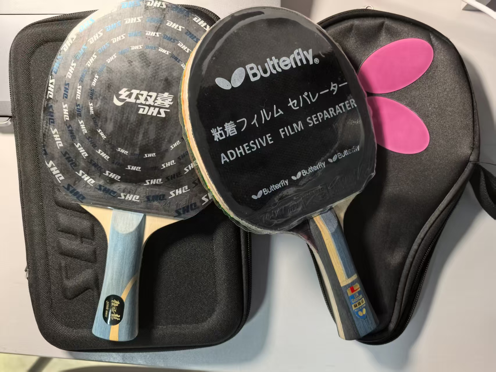
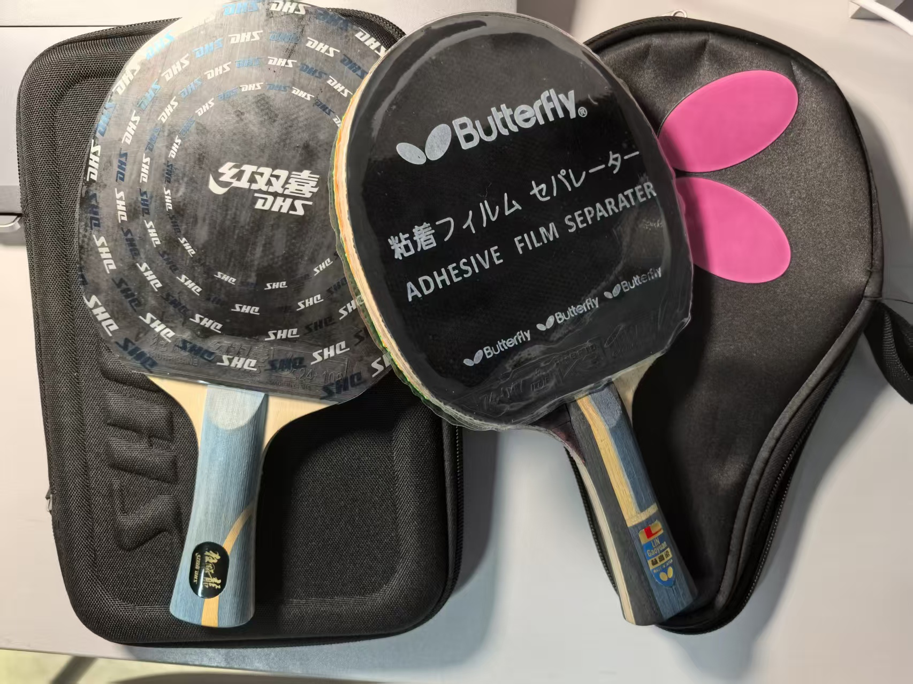
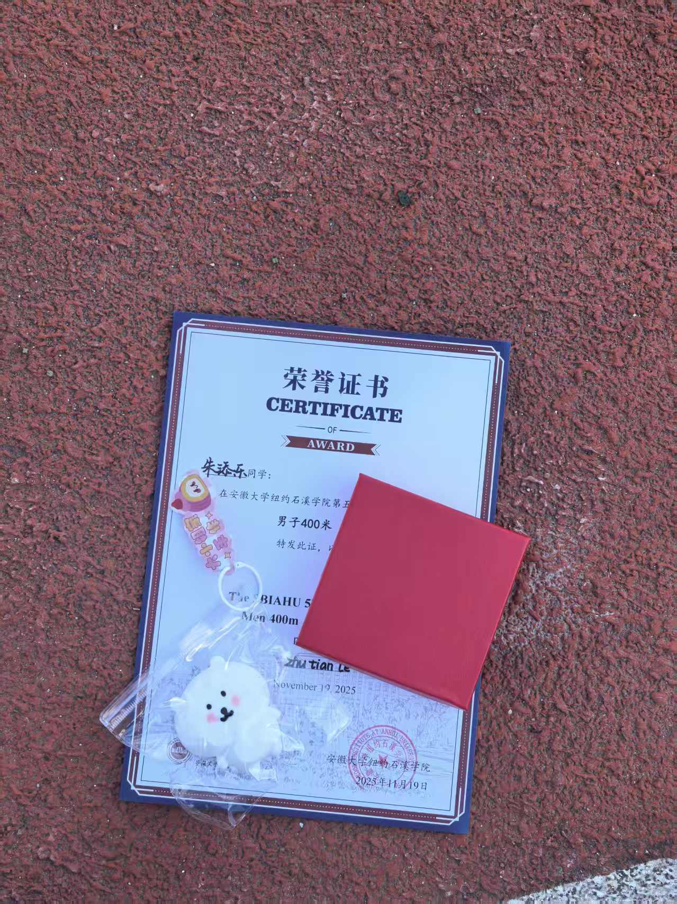
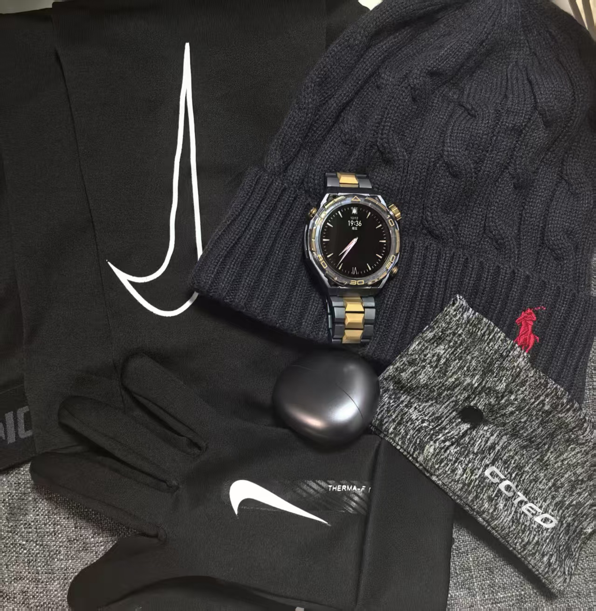
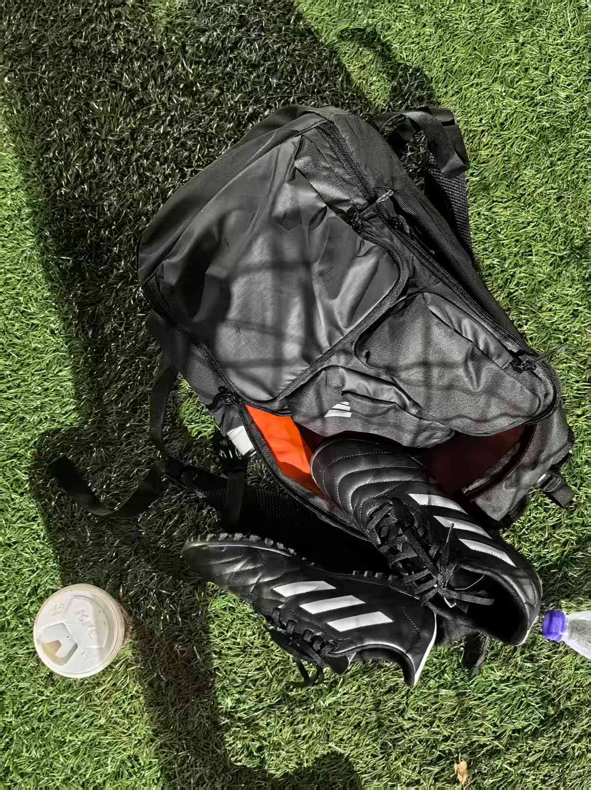

乒乓球
石溪学院乒乓球队成员，曾参加新生杯比赛，享受乒乓球带来的速度与技巧的较量。


跑步
石溪学院田径队成员，25届院运会100米第一名。享受长跑带来的挑战与成就感。

足球
喜欢在绿茵地上驰骋，充分体会团队协作的快乐。
排球
喜欢在球场上挥洒汗水，享受运动带来的乐趣。
石溪学院排球队成员，喜欢排球运动中的团队协作和战术配合。
物理研究
对地球物理学和量子力学有浓厚兴趣，喜欢探索宇宙的奥妙和微观世界的规律。
斯诺克
享受斯诺克运动的策略性和精准度，喜欢挑战自己的专注力和技术。